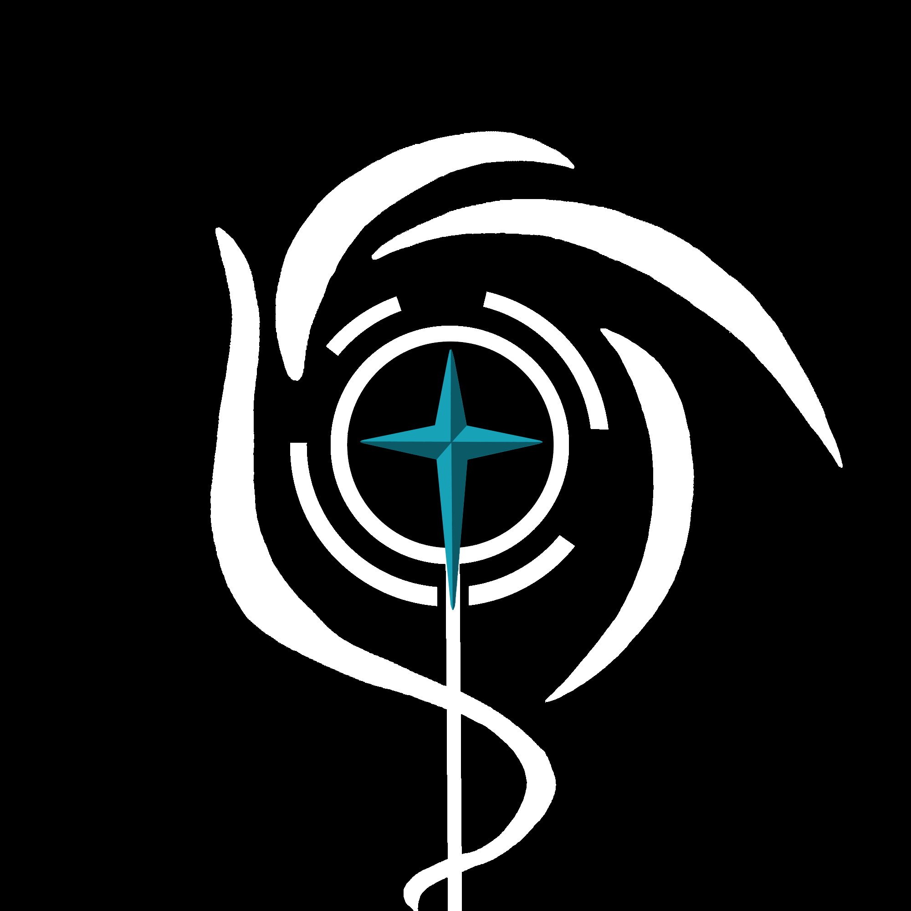
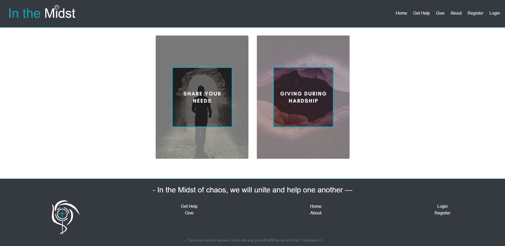

COVID-19 Hackathon Project
 GitHub RepositoryDuring the COVID-19 pandemic, I joined a hackathon where I became a member of a remote team. Over the course of the week-long hackathon, I worked with team members to build a MERN stack website with the goal of providing a way for local communities and churches to supply those at risk with resources, as well as giving users the opportunity to give back to the community via donations.
I worked mainly on the front-end, pair programming with team members as we sought solutions together. I also created the website's name, In the Midst, signifying that even in the midst of chaos, there is hope.
I also designed the logo image, both in the navigation bar and in the footer, to reflect the meaning of the website's title. By connecting it to the "i" in "Midst," it symbolizes that in the "eye" of the storm, there can be peace and hope.

The awesome team members I had the privege of working with on this project included:
Matthew Gunderson |
Ryan Miller |
Sean Rathbun |
Jacob Hunt |
Elizabeth Munsinger |
Joy Kinsinger |
Robert Nickle |
Scott Mercer |
Benjamin Chacko |
Wesley Duris
Click their names to check them out on LinkedIn!
Tools and languages used:
React | Redux | Axios | React-Bootstrap | Moment | Thunk | JSX | HTML | CSS |
REST | Express | Nodemon | Node | NPM | MongoDB | Bcrypt | Mongoose | JWT | Visual Studio Code | Git | GitHub